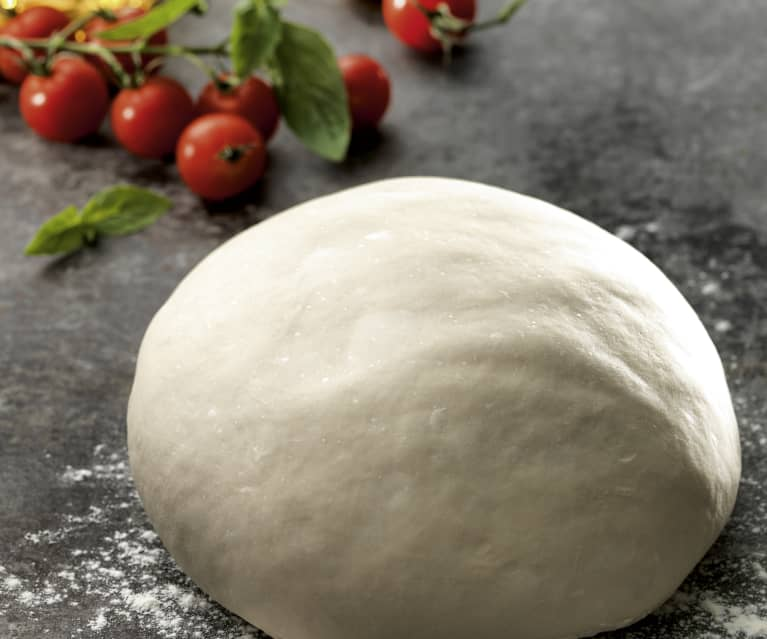

Pizza Dough

Description
This pizza dough recipe is quick and merely involves mixing a few basic ingredients and patting the dough into the pan —
no need to wait for the dough to rise with this approach.
Ingredients
- 3 cups all-purpose flour
- 1 tablespoon white sugar
- 1 (.25 ounce) package active dry yeast
- 1 teaspoon salt
- 1 cup warm water (110 degrees F/45 degrees C)
- 2 tablespoons vegetable oil
Steps